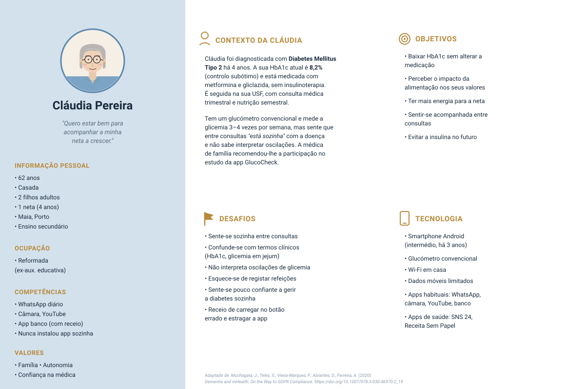
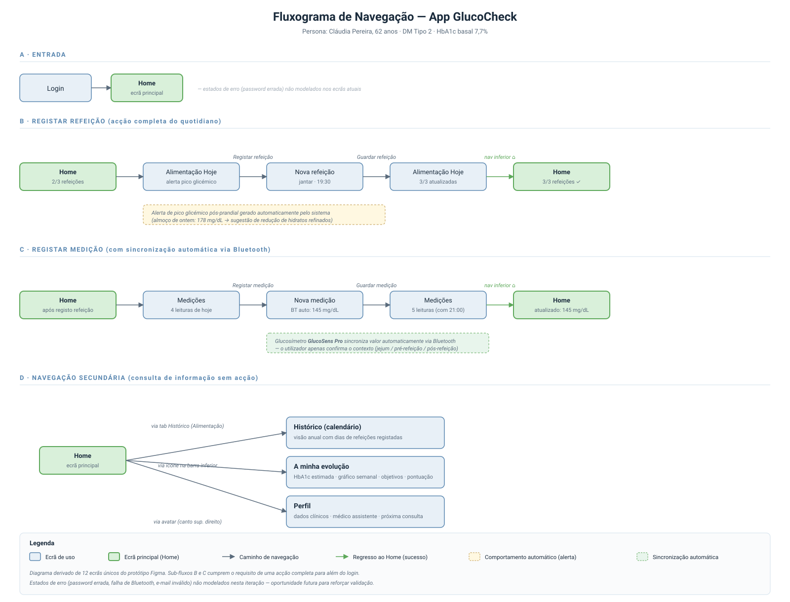

Materiais
Documentos, instrumentos e protótipos do ensaio
Esta página reúne os materiais desenvolvidos no âmbito do ensaio GlucoCheck: o Case Report Form (CRF), o formulário electrónico em REDCap para a recolha de dados, e os materiais de apoio à Investigator’s Meeting — persona, fluxograma de navegação e protótipo da aplicação móvel — produzidos no contexto da TP8.
CRF — Case Report Form
O CRF é o instrumento utilizado para registar os dados clínicos de cada participante ao longo do ensaio. Está organizado em três módulos correspondentes às avaliações do cronograma:
- Inclusão e baseline (T0) — dados sociodemográficos, critérios de elegibilidade, HbA1c, glicemia em jejum, peso, DES-SF, DKQ-24.
- Avaliação intermédia (T1, semana 12) — HbA1c, glicemia em jejum, peso, adesão ao registo alimentar, DES-SF.
- Avaliação final (T2, semana 24) — HbA1c, glicemia em jejum, peso, DES-SF, DKQ-24, satisfação (DTSQ).
A integrar — versão final do CRF em PDF ou imagens das secções.
Formulário REDCap
O formulário REDCap corresponde à versão electrónica do CRF, implementada na plataforma institucional para garantir recolha segura, validação de tipos de dados e backup automático dos registos. O instrumento foi desenhado a partir do CRF e replica a estrutura modular dos três tempos de avaliação.
A integrar — projeto REDCap e dicionário de dados.
Material de apoio à Investigator’s Meeting (TP8)
Os materiais seguintes foram desenvolvidos no âmbito da TP8 — Suporte para Apresentações, Comunicações UX e Prototipagem — em apoio à simulação de uma Investigator’s Meeting dirigida a investigadores e equipa clínica, com duração de 10 a 15 minutos.
Ficha de persona
A ficha de persona representa o utilizador-tipo da aplicação GlucoCheck — adultos entre 40 e 75 anos com Diabetes Mellitus Tipo 2 e controlo glicémico subótimo, seguidos em cuidados de saúde primários. Constitui a referência central no desenho da experiência de utilização da aplicação e é citada ao longo de toda a apresentação como fio condutor narrativo.

### Fluxograma de navegaçãoO fluxograma seguinte representa a estrutura de navegação da aplicação GlucoCheck, identificando os ecrãs principais e as ligações entre eles. Foi a referência usada no desenvolvimento dos wireframes e mockups em Figma, garantindo coerência entre o desenho da experiência e o protótipo final.

Protótipo interativo
O protótipo da aplicação foi desenvolvido em Figma e inclui login funcional e quatro acções completas para além do login: registar uma nova medição, registar uma refeição, consultar o histórico de medições e consultar o perfil do utilizador.
Apresentação
A apresentação foi desenhada para uma Investigator’s Meeting de 10 a 15 minutos dirigida a investigadores e equipa clínica, seguindo o arco narrativo Porquê? — Como? — E então? recomendado nos materiais da unidade curricular.
Cumprimento dos requisitos da TP8
A tabela seguinte mapeia os requisitos definidos no enunciado da TP8 para a respetiva evidência presente nesta página.
| Requisito do enunciado | Cumprimento | Evidência |
|---|---|---|
| Material de suporte à Investigator’s Meeting | ✓ | Esta secção |
| Apresentação do estudo | ✓ | Slides (PDF acima) |
| Demonstração do protótipo | ✓ | Link Figma acima |
| Dirigida a investigadores e equipa clínica | ✓ | Audiência identificada |
| Duração de 10 a 15 minutos | ✓ | Deck dimensionado para ≈ 14 min |
| Link para o protótipo (obrigatório) | ✓ | Link Figma acima |
| Acção completa para além do login (obrigatório) | ✓ | Registar medição · Registar refeição · Histórico · Perfil |